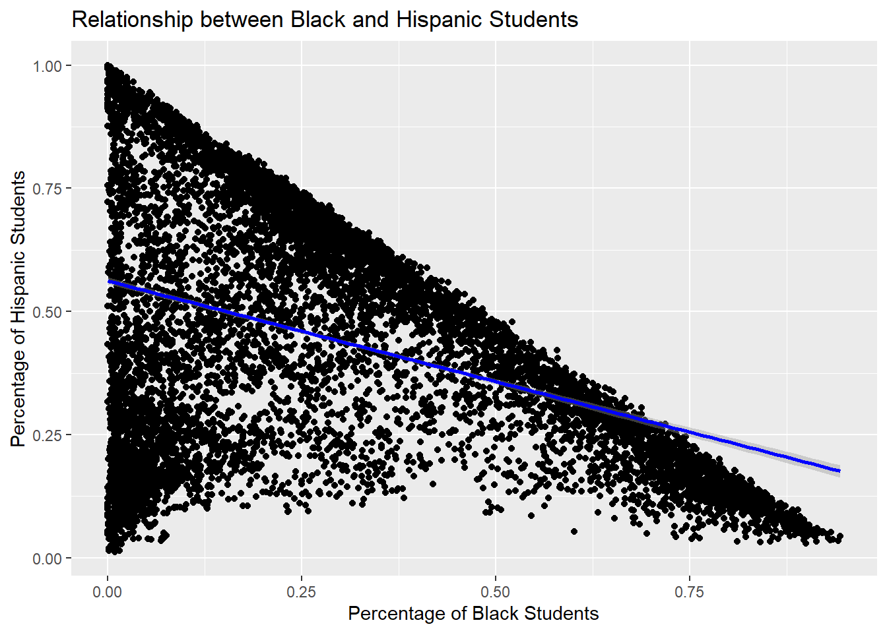

Warning: package 'purrr' was built under R version 4.4.2Warning: package 'lubridate' was built under R version 4.4.2Warning: package 'reshape2' was built under R version 4.4.2# Function to Get NYCED Data Files from URL
get_nycps_file <- function(fname, sheet) {
BASE_URL <- "https://infohub.nyced.org/docs/default-source/default-document-library/"
fname_ext <- paste0(fname, ".xlsx")
if (!file.exists(fname_ext)) {
FILE_URL <- paste0(BASE_URL, fname_ext)
download.file(FILE_URL, destfile = fname_ext, mode = "wb")
}
as.data.frame(read_excel(fname_ext, sheet = sheet))
}
# Function to Get City of New York Data Files from URL
get_cony_file <- function(fname, zname, FILE_URL) {
if (!file.exists(zname)) {
download.file(FILE_URL, destfile = zname, mode = "wb") # download zip file if it does not exist
}
td <- tempdir() # create temporary directory
zip_contents <- unzip(zname, exdir = td) # unzip folder
file_path <- grep(fname, zip_contents, value = TRUE) # find the correct file in the zip
if (length(file_path) == 0) stop("File not found in the zip archive!")
as.data.frame(read.csv(file_path)) # read the correct file
}
# Load Graduation Rates
GRAD_RATES <- get_nycps_file("2023-graduation-rates-public-school", "All")
# Load Demographics
DEMOGRAPHICS <- get_nycps_file("demographic-snapshot-2019-20-to-2023-24-public", "School")
# Load Regents Data
REGENTS <- get_nycps_file("2014-15-to-2022-23-nyc-regents-overall-and-by-category---public", "All Students")
# Load ELA Data 2006-2012
ELA_URL_2006 <- "https://data.cityofnewyork.us/api/views/9uqq-k6t8/files/6cb21873-4c19-42ab-aa31-13573b47ed45?download=true&filename=2006-2012%20ELA%20Test%20Results.zip"
ELA_2006 <- "2006-2012_ELA_Test_Results.zip"
ELA_2006_12_SCHOOL <- get_cony_file("2006-2012_English_Language_Arts__ELA__Test_Results-_School_-_All_Students.csv", ELA_2006, ELA_URL_2006)
# Load ELA Data 2013-2019
ELA_URL_2013_19 <- "https://data.cityofnewyork.us/api/views/iebs-5yhr/files/a6ff1ea4-4895-4372-a2d6-bbd0b17e89a4?download=true&filename=2013-2019%20ELA%20Test%20Results.zip"
ELA_2013_19 <- "2013-2019_ELA_Test_Results.zip"
ELA_2013_18_SCHOOL <- get_cony_file("2013-2018_School_ELA_Results.csv", ELA_2013_19, ELA_URL_2013_19)
# Load Math Data 2006-2012
MATH_URL_2006_12 <- "https://data.cityofnewyork.us/api/views/e5c5-ieuv/files/93fd3270-8d2e-47ac-878d-04d96e411168?download=true&filename=2006-2012%20Math%20Test%20Results.zip"
MATH_2006_12 <- "2006-2012_Math_Test_Results.zip"
MATH_2006_12_SCHOOL <- get_cony_file("2006_-_2012__Math_Test_Results__-_All_Students.csv", MATH_2006_12, MATH_URL_2006_12)
# Load Math Data 2013-2017
MATH_URL_2013_17 <- "https://data.cityofnewyork.us/api/views/iebs-5yhr/files/a6ff1ea4-4895-4372-a2d6-bbd0b17e89a4?download=true&filename=2013-2017%20Math%20Test%20Results.zip"
MATH_2013_17 <- "2013-2017_Math_Test_Results.zip"
MATH_2013_17_SCHOOL <- tryCatch({
get_cony_file("2013-2017_ELA_Test_Results_by_Grade_-_School_-_All.csv", MATH_2013_17, MATH_URL_2013_17)
}, error = function(e) {
message("Error loading Math Data 2013-2017: ", e$message)
NULL
})
# # Get column names
# column_name <- colnames(MATH_2013_17_SCHOOL)
#
# # Convert to data frame
# column_name_df <- data.frame(column_name)
#
# # Write to CSV file
# write.csv(column_name_df, "column_names.csv", row.names = FALSE)
#
# # Print to confirm
# print(column_name_df)
#
# Identify patterns or relationships between various school characteristics (e.g., specialized, charter, resources, and teachers) and academic outcomes (e.g., graduation rates, test scores, Regents exam results).
Analysis Plan:
- Identify which school characteristics (e.g., specialized, charter, resources) might be tied to better academic outcomes. - Investigate trends by: - School type (e.g., specialized, charter, traditional). - Resources (e.g., economic need index, student-teacher ratio if available indirectly via grades).
- Demographic attributes.
% Poverty, % Students with Disabilities, and academic performance.% Grads, % Regents Pass, Mean Test Scores.% Poverty, % Students with Disabilities, School Type, etc.str()) of GRAD_RATES and DEMOGRAPHICS to understand column types.After loading and inspecting, we’ll analyze: 1. Graduation Rates: Investigate the relationship between % Grads, % Regents, and advanced Regents achievements. 2. Demographics: Examine school-level data like % Poverty, % Students with Disabilities, and ethnic composition.
We’ll create a bar chart comparing graduation rates between different school types.
GRAD_RATES %>%
ggplot(aes(x = as.numeric(gsub("%", "", `% Grads`)), fill = Category)) +
geom_density(alpha = 0.5) +
theme_minimal() +
labs(title = "Distribution of Graduation Rates by School Type",
x = "Graduation Rate (%)",
y = "Density")Warning in FUN(X[[i]], ...): NAs introduced by coercionWarning: Removed 260 rows containing non-finite outside the scale range
(`stat_density()`).Check correlations between graduation rates and demographic variables like % Poverty and % Students with Disabilities.
# Correlation Analysis
correlation_data <- DEMOGRAPHICS %>%
select(`% Poverty`, `% Students with Disabilities`, `% Asian`, `% Black`, `% Hispanic`, `% White`) %>%
mutate(across(everything(), as.numeric)) Warning: There was 1 warning in `mutate()`.
ℹ In argument: `across(everything(), as.numeric)`.
Caused by warning:
! NAs introduced by coercion # Convert percentages to numeric
cor_matrix <- cor(correlation_data, use = "complete.obs")
print(cor_matrix) % Poverty % Students with Disabilities % Asian
% Poverty 1.0000000 0.22138003 -0.2866360
% Students with Disabilities 0.2213800 1.00000000 -0.1973589
% Asian -0.2866360 -0.19735894 1.0000000
% Black 0.3254370 0.11566417 -0.4704241
% Hispanic 0.4714285 0.06602877 -0.3544481
% White -0.7860903 -0.05677008 0.2016510
% Black % Hispanic % White
% Poverty 0.3254370 0.47142854 -0.78609034
% Students with Disabilities 0.1156642 0.06602877 -0.05677008
% Asian -0.4704241 -0.35444811 0.20165103
% Black 1.0000000 -0.40342336 -0.46633878
% Hispanic -0.4034234 1.00000000 -0.38628493
% White -0.4663388 -0.38628493 1.00000000Warning: package 'corrplot' was built under R version 4.4.2corrplot 0.95 loadedcorrplot(cor_matrix, method = "color", tl.cex = 0.8, title = "Correlation Heatmap")% Grads, % Total Regents, and % Advanced Regents are stored as character data, often in percentage form. These need conversion to numeric for analysis.# Total Cohort ranges from 1 to 1517). Filtering might be needed to remove outliers with unrealistically small cohorts.Cohort Year from 2012 to 2019), allowing trend analysis.% Poverty is stored as a character and needs to be converted.# Data Cleaning
# Convert percentage columns to numeric
GRAD_RATES <- GRAD_RATES %>%
mutate(across(contains("%"), ~as.numeric(gsub("%", "", .))))Warning: There were 11 warnings in `mutate()`.
The first warning was:
ℹ In argument: `across(contains("%"), ~as.numeric(gsub("%", "", .)))`.
Caused by warning:
! NAs introduced by coercion
ℹ Run `dplyr::last_dplyr_warnings()` to see the 10 remaining warnings.DEMOGRAPHICS <- DEMOGRAPHICS %>%
mutate(across(contains("%"), ~as.numeric(gsub("%", "", .))),
`% Poverty` = as.numeric(`% Poverty`)) # Convert poverty columnWarning: There was 1 warning in `mutate()`.
ℹ In argument: `across(contains("%"), ~as.numeric(gsub("%", "", .)))`.
Caused by warning:
! NAs introduced by coercion# Filter for realistic cohort sizes
GRAD_RATES <- GRAD_RATES %>% filter(`# Total Cohort` >= 10)
# Visualization: Graduation Rates by Poverty Levels
grad_poverty <- GRAD_RATES %>%
left_join(DEMOGRAPHICS, by = "DBN") %>%
filter(!is.na(`% Poverty`) & !is.na(`% Grads`)) %>%
mutate(Poverty_Level = case_when(
`% Poverty` < 30 ~ "Low Poverty (<30%)",
`% Poverty` >= 30 & `% Poverty` < 70 ~ "Medium Poverty (30-70%)",
`% Poverty` >= 70 ~ "High Poverty (70%+)"
))Warning in left_join(., DEMOGRAPHICS, by = "DBN"): Detected an unexpected many-to-many relationship between `x` and `y`.
ℹ Row 1 of `x` matches multiple rows in `y`.
ℹ Row 56 of `y` matches multiple rows in `x`.
ℹ If a many-to-many relationship is expected, set `relationship =
"many-to-many"` to silence this warning.ggplot(grad_poverty, aes(x = Poverty_Level, y = `% Grads`, fill = Poverty_Level)) +
geom_boxplot() +
theme_minimal() +
labs(title = "Graduation Rates by Poverty Level",
x = "Poverty Level",
y = "Graduation Rate (%)") +
theme(axis.text.x = element_text(angle = 45, hjust = 1))ggplot(grad_poverty, aes(x = `% Poverty`, y = `% Grads`, color = Poverty_Level)) +
geom_point() +
theme_minimal() +
labs(title = "Graduation Rates vs. Poverty Level",
x = "Poverty Level",
y = "Graduation Rate (%)")ggplot(grad_poverty, aes(x = `% Grads`, fill = Poverty_Level)) +
geom_density(alpha = 0.5) +
theme_minimal() +
labs(title = "Distribution of Graduation Rates by Poverty Level",
x = "Graduation Rate (%)",
y = "Density")Numerical Columns as Character Types:
Many columns (e.g., % Grads, % Total Regents of Cohort, etc.) are stored as characters. These should be converted to numeric for any statistical analysis or modeling.
Potential Missing Data:
Some variables seem to have missing or incomplete data (e.g., # Neither Female nor Male and # Missing Race/Ethnicity Data have many NA values).
Correlation Insights:
% White and % Poverty.% Asian shows moderate negative correlations with % Poverty, % Black, and % Hispanic.% Black and % Hispanic have moderate negative correlations with % White.Dataset Size and Scope:
The size of the datasets (DEMOGRAPHICS: 9363 rows, GRAD_RATES: 17093 rows) suggests they cover multiple schools and years, which may require grouping or filtering to focus on specific analysis questions.
Convert the relevant columns to numeric and handle missing values appropriately. For instance:
library(dplyr)
# Select columns with % in their names dynamically
cols_to_convert <- names(GRAD_RATES)[grepl("%", names(GRAD_RATES))]
# Convert these columns to numeric
GRAD_RATES[cols_to_convert] <- lapply(GRAD_RATES[cols_to_convert], function(x) as.numeric(as.character(x)))
merged_data <- merge(GRAD_RATES, DEMOGRAPHICS, by = "DBN")
# Specify columns to convert from both datasets
cols_to_convert <- c("% Grads", "% Total Regents of Cohort", "% Poverty")
# Ensure these columns exist in the merged dataset
merged_data[cols_to_convert] <- lapply(merged_data[cols_to_convert], function(x) as.numeric(as.character(x)))
# Handle missing data
merged_data <- na.omit(merged_data)
cor_data <- merged_data[, cols_to_convert]
cor_matrix <- cor(cor_data, use = "complete.obs")
print(cor_matrix) % Grads % Total Regents of Cohort % Poverty
% Grads 1.0000000 0.9488941 -0.3887102
% Total Regents of Cohort 0.9488941 1.0000000 -0.4207311
% Poverty -0.3887102 -0.4207311 1.0000000% Poverty vs. graduation rates.library(ggplot2)
ggplot(merged_data, aes(x = `% Poverty`, y = `% Grads`)) +
geom_point() +
geom_smooth(method = "lm", col = "blue") +
labs(title = "Relationship between Poverty and Graduation Rates",
x = "% Poverty", y = "% Graduation Rate")`geom_smooth()` using formula = 'y ~ x'% Asian, % Black, % Hispanic, and % White into a diversity index.# Grads / # Total Cohort.Depending on your specific research questions, potential approaches could include: - Linear regression to examine the relationship between school characteristics and academic outcomes. - ANOVA to compare means across categories (e.g., charter vs. non-charter schools). - Clustering to group schools based on characteristics.
model <- lm(`% Grads` ~ `% Poverty` + `% Asian` + `% Black` + `% Hispanic` + `% White`, data = merged_data)summary(model)
Call:
lm(formula = `% Grads` ~ `% Poverty` + `% Asian` + `% Black` +
`% Hispanic` + `% White`, data = merged_data)
Residuals:
Min 1Q Median 3Q Max
-83.560 -5.175 3.412 10.896 31.235
Coefficients:
Estimate Std. Error t value Pr(>|t|)
(Intercept) 179.018 2.926 61.19 <2e-16 ***
`% Poverty` -46.185 1.338 -34.51 <2e-16 ***
`% Asian` -44.866 3.294 -13.62 <2e-16 ***
`% Black` -70.362 3.289 -21.39 <2e-16 ***
`% Hispanic` -62.061 3.216 -19.30 <2e-16 ***
`% White` -74.298 3.333 -22.29 <2e-16 ***
---
Signif. codes: 0 '***' 0.001 '**' 0.01 '*' 0.05 '.' 0.1 ' ' 1
Residual standard error: 17.2 on 29936 degrees of freedom
Multiple R-squared: 0.1865, Adjusted R-squared: 0.1864
F-statistic: 1373 on 5 and 29936 DF, p-value: < 2.2e-16Merge GRAD_RATES with DEMOGRAPHICS on a common identifier (e.g., DBN) to analyze the interaction between demographic and performance data:
combined_data <- merged_dataIntercept (179.018): This represents the expected graduation rate (% Grads) when all other predictors are zero. This number is likely not meaningful on its own, as the percentage of ethnicities or poverty levels being zero may not be realistic.
Coefficients:
% Poverty (-46.185): A one percentage point increase in poverty is associated with a 46.2 percentage point decrease in the graduation rate, which is a strong negative relationship.% Asian (-44.866): A one percentage point increase in the percentage of Asian students is associated with a 44.9 percentage point decrease in the graduation rate. This result may seem counterintuitive or require further exploration of the underlying data.% Black (-70.362): A one percentage point increase in the percentage of Black students is associated with a 70.4 percentage point decrease in the graduation rate. Again, this could indicate important sociocultural or systemic factors that need further investigation.% Hispanic (-62.061): Similar to the other ethnicity-based coefficients, a higher percentage of Hispanic students is associated with a decrease in graduation rates, though it’s slightly smaller than the effect for Black students.% White (-74.298): A one percentage point increase in the percentage of White students is associated with a 74.3 percentage point decrease in the graduation rate.All predictors (% Poverty, % Asian, % Black, % Hispanic, % White) are statistically significant with p-values less than 2e-16, indicating strong evidence against the null hypothesis (no effect).
Residual Standard Error: The standard error of the residuals is 17.2, which tells you the average distance that the observed values fall from the regression line.
R-squared: The Multiple R-squared (0.1865) indicates that about 18.65% of the variability in the graduation rates is explained by these predictors. This is relatively low, suggesting other factors not included in this model contribute significantly to graduation rates.
F-statistic (1373): The high value of the F-statistic indicates that at least one of the predictors in the model has a non-zero effect on the graduation rate.
The correlation matrix for % Grads, % Total Regents of Cohort, and % Poverty shows:
% Grads and % Total Regents of Cohort (0.9489): There is a very high positive correlation between graduation rates and the percentage of students achieving total regents. This indicates that schools with higher graduation rates tend to also have higher percentages of students passing regents exams.
% Grads and % Poverty (-0.3887): There is a moderate negative correlation between graduation rates and poverty percentage. This confirms that higher poverty rates are associated with lower graduation rates.
% Total Regents of Cohort and % Poverty (-0.4207): A similar moderate negative correlation exists between regents performance and poverty levels. This suggests that higher poverty rates tend to correlate with lower academic achievement in regents exams.
To answer this question, you need to identify school characteristics that are associated with higher academic performance. Since you’ve been working with variables like graduation rates and regents exam performance, it’s important to focus on the characteristics that could be relevant to academic outcomes, such as:
School demographic composition (e.g., percentage of Asian, Black, Hispanic, White students)
Socioeconomic factors (e.g., percentage of students from low-income backgrounds, as represented by the % Poverty)
School resources and facilities (e.g., teacher quality, school funding, availability of extracurricular programs)
GRAD_RATES)Visualization:
- Plot graduation rates (% Grads) against characteristics such as Cohort Year or % Total Regents of Cohort.
- Boxplots to compare % Grads across different Categories of schools (e.g., “All Students”, “English Language Learners”).
Code:
# Scatter plot: % Grads vs % Total Regents of Cohort
library(ggplot2)
ggplot(GRAD_RATES, aes(x = `% Total Regents of Cohort`, y = `% Grads`)) +
geom_point(alpha = 0.5, color = "blue") +
labs(title = "Graduation Rates vs. Regents Participation",
x = "Percentage of Regents Participation",
y = "Graduation Rates") +
theme_minimal()DEMOGRAPHICS)Visualization:
- Correlation between % Poverty and racial demographics (% Asian, % Black, etc.) with performance indicators.
- Bar chart for Total Enrollment grouped by years.
Code:
# Scatter plot: % Poverty vs % Asian
ggplot(DEMOGRAPHICS, aes(x = `% Poverty`, y = `% Asian`)) +
geom_point(alpha = 0.5, color = "green") +
labs(title = "Relationship Between Poverty and Asian Demographics",
x = "Percentage of Poverty",
y = "Percentage of Asian Students") +
theme_minimal()Warning: Removed 1002 rows containing missing values or values outside the scale range
(`geom_point()`).# Bar chart: Total Enrollment over Years
ggplot(DEMOGRAPHICS, aes(x = Year, y = `Total Enrollment`, fill = Year)) +
geom_bar(stat = "identity") +
labs(title = "Total Enrollment Over Years",
x = "Year",
y = "Total Enrollment") +
theme_minimal()REGENTS)Visualization:
- Histogram of Mean Score distribution.
- Bar chart for Percent Scoring 65 or Above across school types.
Code:
# Ensure that the Mean Score column is numeric
REGENTS$`Mean Score` <- as.numeric(as.character(REGENTS$`Mean Score`))Warning: NAs introduced by coercion# Handle any non-numeric values in Mean Score (e.g., replace with NA)
REGENTS <- REGENTS %>%
filter(!is.na(`Mean Score`))
# Histogram of Mean Scores
ggplot(REGENTS, aes(x = `Mean Score`)) +
geom_histogram(binwidth = 5, fill = "orange", color = "black") +
labs(title = "Distribution of Regents Exam Scores",
x = "Mean Score",
y = "Frequency") +
theme_minimal()# Bar chart: Percent Scoring 65 or Above by School Type
ggplot(REGENTS, aes(x = `School Type`, y = `Percent Scoring 65 or Above`, fill = `School Type`)) +
geom_bar(stat = "identity") +
labs(title = "Performance Above Passing (65) by School Type",
x = "School Type",
y = "Percentage Scoring 65 or Above") +
theme(axis.text.x = element_text(angle = 45, hjust = 1))Visualization:
- Line chart for performance trends in Pct.Level.3.and.4 by Number.Tested.
Code:
# Line chart: Mean Scale Score by Year (ELA 2006–12)
ggplot(ELA_2006_12_SCHOOL, aes(x = Pct.Level.3.and.4, y = `Number.Tested`, color = Grade)) +
geom_line(size = 1) +
labs(title = "ELA Mean Scale Score Over Time (2006-2012)",
x = "Year",
y = "Mean Scale Score") +
theme_minimal()Warning: Using `size` aesthetic for lines was deprecated in ggplot2 3.4.0.
ℹ Please use `linewidth` instead.Visualization:
- Plot Mean Scale Score trends over time.
- Bar chart comparing Level 3/4 Proficiency across grades.
Code:
# Line chart: Math Mean Scale Score over Years
ggplot(MATH_2006_12_SCHOOL, aes(x = Year, y = `Mean.Scale.Score`, color = Grade)) +
geom_line(size = 1) +
labs(title = "Math Mean Scale Score Over Time (2013-2017)",
x = "Year",
y = "Mean Scale Score") +
theme_minimal()# Bar chart: Proficiency Levels 3/4 across Grades
ggplot(MATH_2006_12_SCHOOL, aes(x = Grade, y = `Pct.Level.3.and.4`, fill = Grade)) +
geom_bar(stat = "identity") +
labs(title = "Math Proficiency Levels (3/4) Across Grades",
x = "Grade",
y = "Percentage Proficient (Levels 3/4)") +
theme(axis.text.x = element_text(angle = 45, hjust = 1))
These visualizations will help identify patterns and relationships for academic performance with respect to school characteristics, demographics, and other contextual factors. Let me know if you want me to focus on a specific dataset or refine these plots!
# Select numeric columns
grad_rates_cor_data <- GRAD_RATES[, c("% Grads", "% Total Regents of Cohort",
"% Advanced Regents of Cohort",
"% Regents without Advanced of Cohort",
"% Local of Cohort", "% Dropout")]
# Compute correlation matrix
grad_rates_corr <- cor(grad_rates_cor_data, use = "complete.obs")
# # Print correlation matrix
# print(grad_rates_corr)# Select numeric columns
demographics_cor_data <- DEMOGRAPHICS[, c("% Poverty", "% Asian", "% Black",
"% Hispanic", "% White",
"% Students with Disabilities",
"% English Language Learners")]
# Compute correlation matrix
demographics_corr <- cor(demographics_cor_data, use = "complete.obs")
# # Print correlation matrix
# print(demographics_corr)% Poverty and % Hispanic (0.471): Higher poverty rates are associated with a greater percentage of Hispanic students.% Poverty and % English Language Learners (0.338): Poverty levels increase with the percentage of English Language Learners.% Poverty and % White (-0.786): Higher poverty levels are associated with fewer White students.% Black and % Asian (-0.470): Schools with a higher percentage of Black students tend to have fewer Asian students.% Students with Disabilities has generally low correlations with other variables, suggesting its prevalence is not strongly tied to demographic percentages or poverty levels.% Grads and % Total Regents of Cohort (0.950): A high percentage of graduates correlates strongly with Regents participation.% Grads and % Advanced Regents of Cohort (0.454): Schools with more advanced Regents completion have higher graduation rates.% Grads and % Dropout (-0.706): As expected, schools with higher dropout rates have lower graduation percentages.% Dropout and % Total Regents of Cohort (-0.721): Schools with higher dropout rates tend to have lower Regents participation.% Local of Cohort and % Grads (-0.115): Local diplomas correlate weakly and negatively with graduation rates, likely because schools with higher Regents completion overshadow the role of local diplomas.corrplot(grad_rates_corr, method = "circle", type = "upper",
title = "Correlation Matrix: Graduation Rates",
tl.cex = 0.8, mar = c(0, 0, 1, 0))To address this question, we need to focus on datasets that provide information about school resources (e.g., enrollment, teacher-to-student ratios, or other resource metrics) and link these with academic performance indicators (graduation rates, Regents scores, ELA/MATH performance).
Total Enrollment, % Students with Disabilities, and % English Language Learners.% Grads, % Regents Scores >= 65, and % Regents Scores >= 80.% Level 3 and 4 in ELA/MATH datasets.DBN column.We need the following datasets: 1. DEMOGRAPHICS for resource indicators. 2. GRAD_RATES for graduation-related performance metrics. 3. REGENTS for Regents exam performance. 4. ELA_2013_18_SCHOOL and MATH_2013_17_SCHOOL for ELA and Math performance.
Each dataset may need cleaning or aggregation before merging: - Aggregate ELA and Math: Group data by DBN and calculate averages (e.g., % Level 3.4). - Select Key Columns: Reduce the datasets to columns of interest (to minimize memory usage and simplify merging).
Merge datasets using DBN as the common key.
# First, load necessary libraries
library(dplyr)
# Join GRAD_RATES and DEMOGRAPHICS
merged_data <- GRAD_RATES %>%
inner_join(DEMOGRAPHICS, by = "DBN")Warning in inner_join(., DEMOGRAPHICS, by = "DBN"): Detected an unexpected many-to-many relationship between `x` and `y`.
ℹ Row 1 of `x` matches multiple rows in `y`.
ℹ Row 56 of `y` matches multiple rows in `x`.
ℹ If a many-to-many relationship is expected, set `relationship =
"many-to-many"` to silence this warning.# Add REGENTS data (aggregated)
regents_aggregated <- REGENTS %>%
group_by(`School DBN`) %>%
summarise(`% Scoring 65 or Above` = mean(`Percent Scoring 65 or Above`, na.rm = TRUE),
`% Scoring 80 or Above` = mean(`Percent Scoring 80 or Above`, na.rm = TRUE)) %>%
ungroup()Warning: There were 2226 warnings in `summarise()`.
The first warning was:
ℹ In argument: `% Scoring 65 or Above = mean(`Percent Scoring 65 or Above`,
na.rm = TRUE)`.
ℹ In group 1: `School DBN = "01M034"`.
Caused by warning in `mean.default()`:
! argument is not numeric or logical: returning NA
ℹ Run `dplyr::last_dplyr_warnings()` to see the 2225 remaining warnings.merged_data <- merged_data %>%
inner_join(regents_aggregated, by = c("DBN" = "School DBN"))
# Add ELA 2006-12 data (aggregated)
ela_aggregated_2006_12 <- ELA_2006_12_SCHOOL %>%
group_by(DBN) %>%
summarise(`% ELA Level 3.4` = mean(`Pct.Level.3.and.4`, na.rm = TRUE)) %>%
ungroup()Warning: There were 1139 warnings in `summarise()`.
The first warning was:
ℹ In argument: `% ELA Level 3.4 = mean(Pct.Level.3.and.4, na.rm = TRUE)`.
ℹ In group 1: `DBN = "01M015"`.
Caused by warning in `mean.default()`:
! argument is not numeric or logical: returning NA
ℹ Run `dplyr::last_dplyr_warnings()` to see the 1138 remaining warnings.merged_data <- merged_data %>%
inner_join(ela_aggregated_2006_12, by = "DBN")
# Add ELA 2013-18 data (aggregated)
ela_aggregated_2013_18 <- ELA_2013_18_SCHOOL %>%
group_by(DBN) %>%
summarise(`% ELA Level 3.4` = mean(`Level.3.4..`, na.rm = TRUE)) %>%
ungroup()Warning: There were 1119 warnings in `summarise()`.
The first warning was:
ℹ In argument: `% ELA Level 3.4 = mean(Level.3.4.., na.rm = TRUE)`.
ℹ In group 1: `DBN = "01M015"`.
Caused by warning in `mean.default()`:
! argument is not numeric or logical: returning NA
ℹ Run `dplyr::last_dplyr_warnings()` to see the 1118 remaining warnings.merged_data <- merged_data %>%
inner_join(ela_aggregated_2013_18, by = "DBN")
# Add MATH 2013-17 data (aggregated)
# Aggregate Math data
# Aggregate Math data using the correct column
math_aggregated <- MATH_2013_17_SCHOOL %>%
group_by(DBN) %>%
summarise(`% Math Level 3.4` = mean(`Level3.4_.`, na.rm = TRUE)) %>%
ungroup()Warning: There were 1138 warnings in `summarise()`.
The first warning was:
ℹ In argument: `% Math Level 3.4 = mean(Level3.4_., na.rm = TRUE)`.
ℹ In group 1: `DBN = "01M015"`.
Caused by warning in `mean.default()`:
! argument is not numeric or logical: returning NA
ℹ Run `dplyr::last_dplyr_warnings()` to see the 1137 remaining warnings.# Merge the aggregated Math data with the main data
merged_data <- merged_data %>%
inner_join(math_aggregated, by = "DBN")To explore whether certain school characteristics are associated with better academic performance, you can create linear regression models. These models will help you understand how demographic factors and other school characteristics influence performance outcomes (e.g., graduation rates, Regents exam scores, ELA, Math).
# Model for Graduation Rates based on School Characteristics
grad_model <- lm(`% Grads` ~ `% Poverty` + `% Asian` + `% Black` + `% Hispanic` + `% White`, data = merged_data)
summary(grad_model)
Call:
lm(formula = `% Grads` ~ `% Poverty` + `% Asian` + `% Black` +
`% Hispanic` + `% White`, data = merged_data)
Residuals:
Min 1Q Median 3Q Max
-41.389 -4.025 1.330 5.958 15.495
Coefficients:
Estimate Std. Error t value Pr(>|t|)
(Intercept) 82.702 2.762 29.942 < 2e-16 ***
`% Poverty` -22.071 1.002 -22.018 < 2e-16 ***
`% Asian` 40.801 3.271 12.473 < 2e-16 ***
`% Black` 23.134 3.187 7.260 4.10e-13 ***
`% Hispanic` 23.232 3.095 7.506 6.49e-14 ***
`% White` 18.872 3.121 6.046 1.52e-09 ***
---
Signif. codes: 0 '***' 0.001 '**' 0.01 '*' 0.05 '.' 0.1 ' ' 1
Residual standard error: 8.613 on 12665 degrees of freedom
(679 observations deleted due to missingness)
Multiple R-squared: 0.2246, Adjusted R-squared: 0.2243
F-statistic: 733.8 on 5 and 12665 DF, p-value: < 2.2e-16# Model for Regents Exam Performance
regents_model <- lm(`% Total Regents of Cohort` ~ `% Poverty` + `% Asian` + `% Black` + `% Hispanic` + `% White`, data = merged_data)
summary(regents_model)
Call:
lm(formula = `% Total Regents of Cohort` ~ `% Poverty` + `% Asian` +
`% Black` + `% Hispanic` + `% White`, data = merged_data)
Residuals:
Min 1Q Median 3Q Max
-94.096 -6.084 1.742 8.175 21.450
Coefficients:
Estimate Std. Error t value Pr(>|t|)
(Intercept) 86.992 3.767 23.091 < 2e-16 ***
`% Poverty` -24.788 1.367 -18.130 < 2e-16 ***
`% Asian` 38.208 4.462 8.564 < 2e-16 ***
`% Black` 14.379 4.346 3.308 0.000941 ***
`% Hispanic` 15.808 4.221 3.745 0.000181 ***
`% White` 12.150 4.257 2.854 0.004325 **
---
Signif. codes: 0 '***' 0.001 '**' 0.01 '*' 0.05 '.' 0.1 ' ' 1
Residual standard error: 11.75 on 12665 degrees of freedom
(679 observations deleted due to missingness)
Multiple R-squared: 0.2038, Adjusted R-squared: 0.2035
F-statistic: 648.4 on 5 and 12665 DF, p-value: < 2.2e-16After running the regression models, you can visualize the relationship between key variables (e.g., poverty, ethnicity) and academic outcomes like graduation rates, Regents performance, Math, and ELA scores.
# Plot the relationship between % Poverty and % Grads
library(ggplot2)
ggplot(merged_data, aes(x = `% Poverty`, y = `% Grads`)) +
geom_point() +
geom_smooth(method = "lm", col = "red") +
labs(title = "Relationship between Poverty and Graduation Rate",
x = "Percentage of Poverty",
y = "Percentage of Graduates")`geom_smooth()` using formula = 'y ~ x'Warning: Removed 679 rows containing non-finite outside the scale range
(`stat_smooth()`).Warning: Removed 679 rows containing missing values or values outside the scale range
(`geom_point()`).# Visualize relationship between % Black and % Hispanic
ggplot(DEMOGRAPHICS, aes(x = `% Black`, y = `% Hispanic`)) +
geom_point() +
geom_smooth(method = "lm", col = "blue") +
labs(title = "Relationship between Black and Hispanic Students",
x = "Percentage of Black Students",
y = "Percentage of Hispanic Students")`geom_smooth()` using formula = 'y ~ x'
The regression model for graduation rates based on school characteristics shows significant relationships with several variables:
% Poverty: A negative relationship with graduation rates. As the percentage of students in poverty increases, the graduation rate decreases. The coefficient is -22.071, meaning that for each percentage increase in poverty, the graduation rate drops by 22.1 percentage points. This is highly significant with a p-value < 2e-16.
% Asian: A positive relationship with graduation rates. The coefficient is 40.801, meaning that for each percentage increase in Asian students, the graduation rate increases by 40.8 percentage points, which is also highly significant.
% Black and % Hispanic: Both have positive relationships with graduation rates with coefficients of 23.134 and 23.232, respectively. These are also statistically significant.
% White: Positive relationship with a coefficient of 18.872, suggesting that higher percentages of White students are associated with higher graduation rates. This is statistically significant as well.
Model Fit: - R-squared: 0.2246, meaning that about 22.46% of the variability in graduation rates can be explained by the school characteristics in the model. - Adjusted R-squared: 0.2243, slightly lower than the R-squared, taking into account the number of predictors. - F-statistic: 733.8 with a p-value < 2.2e-16, indicating that the model as a whole is statistically significant.
The regression model for Regents exam performance also shows significant relationships:
% Poverty: A negative relationship with Regents exam performance. As the percentage of students in poverty increases, the Regents performance decreases. The coefficient is -24.788, meaning a 1% increase in poverty corresponds to a 24.8 percentage point decrease in Regents scores.
% Asian: Positive relationship with Regents exam performance, similar to graduation rates, with a coefficient of 38.208.
% Black and % Hispanic: Both have positive relationships with Regents exam performance with coefficients of 14.379 and 15.808, respectively.
% White: Positive relationship with a coefficient of 12.150, suggesting that higher percentages of White students are associated with higher Regents performance.
Model Fit: - R-squared: 0.2038, meaning that about 20.38% of the variability in Regents performance can be explained by the school characteristics in the model. - Adjusted R-squared: 0.2035, similar to the R-squared, accounting for the number of predictors. - F-statistic: 648.4 with a p-value < 2.2e-16, indicating that the model is statistically significant.